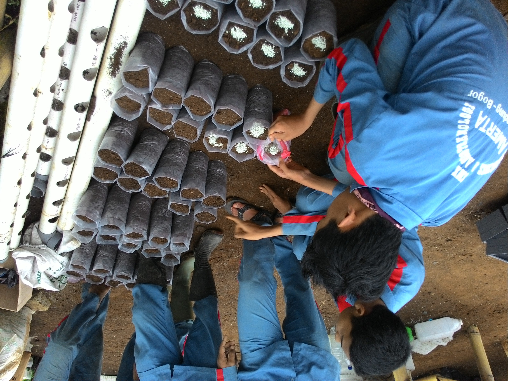

Ujikom
Uji Kompetensi adalah kegiatan yang dilakukan oleh kelas XII sebagai syarat memenuhi nilai kelulusan
Read More
PKL
Praktik Kerja Lapangan adalah kegiatan wajib yang dilakukan siswa untuk mengetahui bagaimana praktik sesungguhnya di dunia pertanian
Read More
Pramuka
Ekstra Kulikuler wajib dimana sering melakukan kegiatan-kegiatan perkemahan dan outbound
Read More